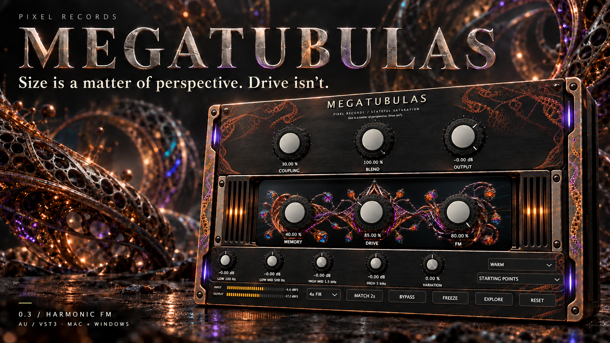

Lean into it.
Move from gentle colour to dense saturation. The revised Drive curve brings quiet bass into the action, with restrained highs and a little extra body.

STATEFUL SATURATION / AU + VST3
Free downloadSMALL KNOBS. LARGE CONSEQUENCES.
Give your bass some weight, your synths some teeth, and your drums something to remember.
MEGATUBULAS puts three coupled saturation stages behind a very large window. Push the Drive for dense, low-order harmonics. Let Memory shape the recovery. Keep the top end under control. In v0.3, experiment with harmonic FM that follows single bass notes.
FREE & OPEN SOURCE · PIXEL RECORDS · v0.3.0 EXPERIMENTAL
THE INTERFACE. ON A DIFFERENT SCALE.
LESS GUESSING. MORE LISTENING.
One original bass phrase. Eleven renders. The same RMS level, so louder doesn’t get a free vote.
Rendered through the native plugin at 8× oversampling. This player switches recordings; it doesn’t run the plugin in your browser.
THE CONTROLS / WARM · DRIVE 75
EXPERIMENTAL HARMONIC FM / DRIVE 35 · MEMORY 40 · COUPLING 30 · AMOUNT 80 · DEPTH 70
No autoplay. No borrowed track. Just an original synthesised bass phrase, at −20 dBFS RMS.
NOT JUST A TRANSFER CURVE
Asymmetrical saturation, a bass-body lift and the strongest top-end softening of the three characters. Start here for a fuller foundation.
TAKE IT INTO YOUR DAW
Free to download.
Made by Pixel Records.
Bring your own good taste.
AU + VST3 + standalone
Apple Silicon · macOS 12 or later
Download for Macv0.3.0 · 117.7 MB · ZIP
~/Library/Audio/Plug-Ins/Components.~/Library/Audio/Plug-Ins/VST3.The included installer script can create the folders and keep backups for you. This build is ad-hoc signed and not notarized; macOS may require approval in Privacy & Security. Intel Macs are not supported by this download.
VST3 + standalone
Windows 10 / 11 · 64-bit
Download for Windowsv0.3.0 · 75.4 MB · ZIP
Native Windows x64 build. Numerical, processor-state and VST3 pluginval checks passed before packaging. This build is unsigned. Additional DAW compatibility remains a listening and host check.
Unzip and copy the entire MEGATUBULAS.vst3 bundle to C:\Program Files\Common Files\VST3\Pixel Records, then rescan your DAW. The standalone application is optional.
AGPLv3 · Source, build scripts, artwork used by the interface, and licence notices.
Archive: v0.2.1 · previous Mac + Windows release ↗
Mac AU/VST3 and Windows x64 VST3 passed native validation. Compatibility with every DAW is not implied. No hidden limiter: keep an eye on your output level.
A synthesized harmonic voice follows one bass note at a time, from 25–400 Hz, and enters the saturation stages. FM Amount adds the layer. The small 1×/2×/3× ratio picker sits beside FM. Depth is in Advanced and defaults to 66%. Tracking takes time, especially on low notes. Use single-note bass, not chords; FM defaults off, and Depth zero also silences it.
The processor keeps envelope and bias histories in its three stages. Those histories change the response to the next samples. Memory controls their recovery; it isn’t an echo or delay effect.
No. Processing works with the editor closed. The lattice is artwork driven by parameter values and audio telemetry. You can turn motion off in the advanced panel.
Variation starts at zero with deterministic voicing. Raise it to explore bounded character variations using a seeded pseudorandom source. Freeze holds the selected voice while its memory continues responding to the signal. Nothing random is added as audio noise.
No. It’s an original experimental digital saturation effect with microtubule-inspired artwork. The sound comes from the processing, not a claim about biology or consciousness.